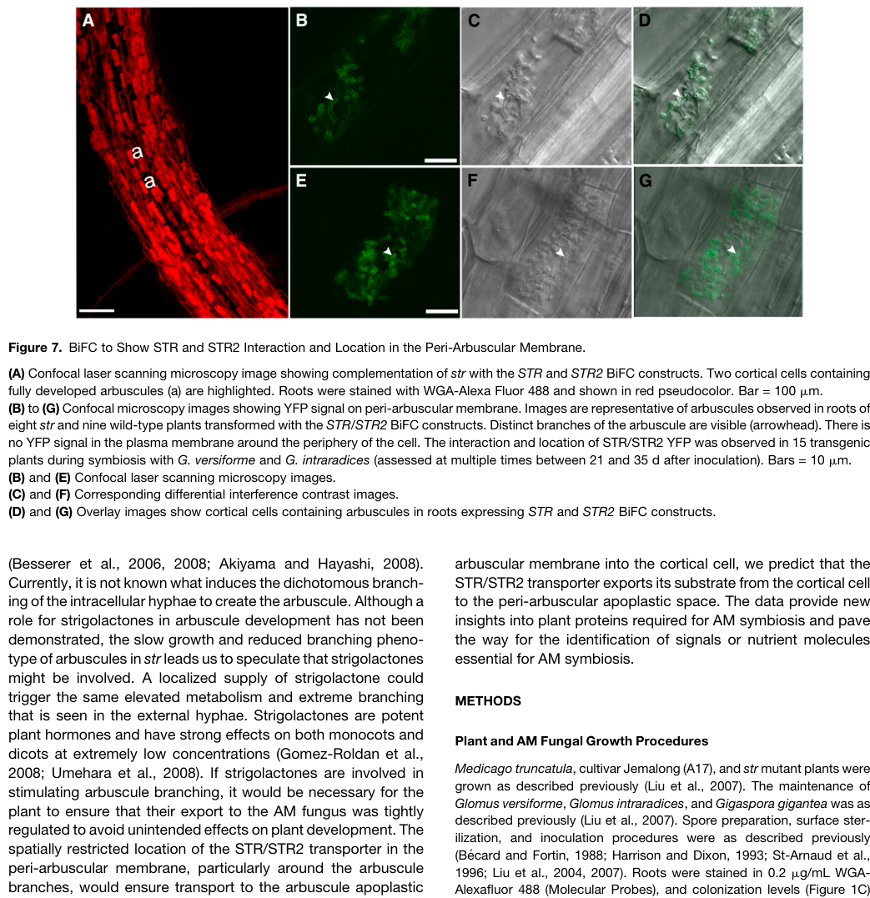

STR (STUNTED ARBUSCULE) is a half-size ATP-binding cassette transporter of the ABCG subfamily from Medicago truncatula, with one nucleotide-binding domain and one six-helix transmembrane domain. It belongs to a conserved STR clade found in plants that form arbuscular mycorrhizal (AM) symbioses and absent from non-host species such as Arabidopsis. STR heterodimerises with the related half-transporter STR2 to form a complete ABC transporter that is located in the periarbuscular membrane, the host-derived membrane surrounding the branches of fungal arbuscules in root cortical cells. STR is expressed at low levels in root vascular tissue and is strongly induced in arbuscule-containing cortical cells under the control of the AM transcriptional program (RAM1, WRI5a, ERM1). Loss of STR or STR2 arrests arbuscules at a small, stunted stage and AM symbiosis fails, whereas root-nodule symbiosis with rhizobia is unaffected; rice STR1/STR2 mutants show the same phenotype. STR-STR2 is proposed to export host-synthesised lipids, most likely sn-2 (beta) monoacylglycerols such as 2-monopalmitin produced by FatM and RAM2, across the periarbuscular membrane for use by the lipid-auxotrophic fungus, but its transported substrate has not been demonstrated biochemically.
| GO Term | Evidence | Action | Reason |
|---|---|---|---|
|
GO:0005515
protein binding
|
IPI
PMID:20453115 Two Medicago truncatula half-ABC transporters are essential ... |
MODIFY |
Summary: STR physically interacts with its partner half-transporter STR2 (UniProt A9YWR6); split-YFP (BiFC) with functional, native-promoter constructs showed STR-STR2 interaction at the periarbuscular membrane, whereas STR-STR controls gave no signal. The informative activity is heterodimer formation between two half-size ABCG transporters to assemble a complete ABC transporter.
Reason: Protein binding is uninformative. The evidence (PMID:20453115) is specifically for heterodimerisation of STR with the non-identical half-transporter STR2, which is the structural prerequisite for a functional ABC transporter (one NBD and one TMD per half). Protein heterodimerization activity captures this precisely.
Proposed replacements:
protein heterodimerization activity
Supporting Evidence:
PMID:20453115
STR heterodimerizes with STR2, and the resulting transporter is located in the peri-arbuscular membrane
file:MEDTR/STR/STR-deep-research-falcon.md
Half-transporters require a partner to form the architecture of a complete ABC transporter.
|
|
GO:0005524
ATP binding
|
IEA
GO_REF:0000002 |
KEEP AS NON CORE |
Summary: STR carries a single ABC nucleotide-binding domain with conserved ATP-binding motifs (InterPro IPR003439/IPR017871), so ATP binding is mechanistically expected.
Reason: Correct, domain-based inference; ATP binding is a sub-step of the ABC transport cycle rather than the informative function, which is captured by ABC-type transporter activity. Retained as non-core.
Supporting Evidence:
file:MEDTR/STR/STR-deep-research-falcon.md
STR has one nucleotide-binding domain, containing conserved ABC ATP-binding motifs, and one membrane-spanning domain with approximately six helices.
|
|
GO:0005886
plasma membrane
|
EXP
PMID:20453115 Two Medicago truncatula half-ABC transporters are essential ... |
ACCEPT |
Summary: Plasma membrane annotation from PMID:20453115. The STR-STR2 complex was imaged in the periarbuscular membrane (PAM), a specialised domain of the host cell plasma membrane that envelops arbuscule branches; signal was not detected at the peripheral plasma membrane.
Reason: The PAM is continuous with, and a specialised domain of, the cortical cell plasma membrane, so plasma membrane is correct though less specific than periarbuscular membrane (also annotated, IDA, same paper). Note that in GO the periarbuscular membrane term is classified under host cell membrane / host cellular component rather than under plasma membrane, so the PM row is not redundant in the graph and is worth retaining. Deferring to the curator, who read the full text.
Supporting Evidence:
PMID:20453115
the resulting transporter is located in the peri-arbuscular membrane
file:MEDTR/STR/STR-deep-research-falcon.md
undetectable at the ordinary peripheral plasma membrane under the reported imaging conditions
|
|
GO:0005886
plasma membrane
|
IBA
GO_REF:0000033 |
ACCEPT |
Summary: IBA (PTN000443664) transferring plasma membrane localisation across the ABCG half-transporter clade; STR itself and STR2 (A9YWR6) appear among the descendant evidence.
Reason: Consistent with the experimental PAM/plasma membrane localisation of STR. STR appearing in its own WITH/FROM reflects its experimental grounding and is expected for an IBA.
Supporting Evidence:
PMID:20453115
STR heterodimerizes with STR2, and the resulting transporter is located in the peri-arbuscular membrane
|
|
GO:0005886
plasma membrane
|
IEA
GO_REF:0000044 |
ACCEPT |
Summary: IEA plasma membrane from the UniProt subcellular location vocabulary (Cell membrane), itself based on PMID:20453115.
Reason: Correct; redundant with the EXP and IBA rows but consistent with the experimentally determined PAM localisation.
Supporting Evidence:
PMID:20453115
the resulting transporter is located in the peri-arbuscular membrane
|
|
GO:0009610
response to symbiotic fungus
|
IEP
PMID:20453115 Two Medicago truncatula half-ABC transporters are essential ... |
KEEP AS NON CORE |
Summary: IEP from PMID:20453115. STR expression is induced in cortical cells containing arbuscules during AM symbiosis with Glomus versiforme, in addition to constitutive vascular expression.
Reason: The expression induction is well documented, but response to symbiotic fungus reflects transcriptional regulation of STR rather than its function; the functional role is captured by arbuscular mycorrhizal association (IMP). Retained as non-core.
Supporting Evidence:
PMID:20453115
STR and STR2 are coexpressed constitutively in the vascular tissue, and expression is induced in cortical cells containing arbuscules.
|
|
GO:0009610
response to symbiotic fungus
|
IEP
PMID:26511916 Hyphal Branching during Arbuscule Development Requires Reduc... |
KEEP AS NON CORE |
Summary: IEP from PMID:26511916. STR expression in colonised roots depends on the GRAS transcription factor RAM1; later work shows the AP2 factors WRI5a and ERM1 directly bind AW-box elements in the STR promoter.
Reason: Supports AM-induced, RAM1-dependent expression of STR, i.e. STR is a target of the symbiotic transcriptional program. This is a response/expression annotation and not the function of STR; non-core.
Supporting Evidence:
PMID:26511916
RAM1 regulates expression of EXO70I and Stunted Arbuscule, two genes whose loss of function impacts arbuscule branching
PMID:37717076
ERM1 functions as a transcriptional activator that regulates lipid metabolism and transport by binding directly to promoters of downstream genes such as STR and STR2 via AW-box and AW-box-like motifs
|
|
GO:0009877
nodulation
|
IMP
NOT
PMID:20453115 Two Medicago truncatula half-ABC transporters are essential ... |
ACCEPT |
Summary: NOT nodulation. The str mutant nodulates normally with Sinorhizobium meliloti, distinguishing STR from common symbiosis signalling genes required for both AM and root-nodule symbioses.
Reason: Well supported negative annotation from the mutant phenotype; STR is specific to the arbuscule stage of AM symbiosis.
Supporting Evidence:
PMID:20453115
In contrast with legume symbiosis mutants reported previously, str shows a wild-type nodulation phenotype.
|
|
GO:0016020
membrane
|
IEA
GO_REF:0000002 |
KEEP AS NON CORE |
Summary: Generic membrane localisation from the ABC-2 type transmembrane domain (IPR013525).
Reason: Correct but uninformative; the experimentally supported location is the periarbuscular membrane.
Supporting Evidence:
file:MEDTR/STR/STR-deep-research-falcon.md
STR has one nucleotide-binding domain, containing conserved ABC ATP-binding motifs, and one membrane-spanning domain with approximately six helices.
|
|
GO:0016887
ATP hydrolysis activity
|
IEA
GO_REF:0000002 |
KEEP AS NON CORE |
Summary: ATP hydrolysis activity inferred from the ABC ATPase domain.
Reason: Expected from the NBD architecture, but no ATPase activity has been measured for STR or the STR-STR2 heterodimer, and ATP hydrolysis is a component of the transport cycle better represented by ABC-type transporter activity. Non-core.
Supporting Evidence:
file:MEDTR/STR/STR-deep-research-falcon.md
substrate-coupled ATPase activity and transport kinetics have
|
|
GO:0036377
arbuscular mycorrhizal association
|
IMP
PMID:20453115 Two Medicago truncatula half-ABC transporters are essential ... |
ACCEPT |
Summary: IMP from PMID:20453115. The str mutant (Gln635-stop) and STR2 RNAi lines are blocked at a stunted arbuscule stage and AM symbiosis fails; wild-type STR complements. The rice orthologues STR1/STR2 give the same phenotype.
Reason: Core biological process. STR acts in the host cortical cell at the plant-fungus interface (PAM) to support arbuscule development; its PAM-localised transport activity is thought to supply lipid to the fungus, so this is participation in the symbiotic exchange rather than a remote requirement. This is the plant-side term; the symbiont-side formation of arbuscule for nutrient acquisition (GO:0075328) would not be appropriate.
Supporting Evidence:
PMID:20453115
we report a Medicago truncatula mutant, stunted arbuscule (str), in which arbuscule development is impaired and AM symbiosis fails
PMID:22077667
Mutation of either of the Oryza sativa (rice) ABCG transporters blocked arbuscule growth of different AM fungi at a small and stunted stage
|
|
GO:0042626
ATPase-coupled transmembrane transporter activity
|
IBA
GO_REF:0000033 |
ACCEPT |
Summary: IBA (PTN008283605) ATPase-coupled transmembrane transporter activity for the ABCG half-transporter clade.
Reason: Appropriate, substrate-agnostic level for STR. STR is a half-size ABCG transporter that functions as an STR-STR2 heterodimer; the generic ATPase-coupled transporter activity is supported by architecture and phylogeny, and correctly avoids asserting a specific substrate, which has not been biochemically demonstrated.
Supporting Evidence:
PMID:20453115
encodes a half-size ATP binding cassette (ABC) transporter of a subfamily (ABCG)
PMID:34618047
It is tempting to speculate that sn2-MAG compounds or MAG derivatives are STR/STR2 substrates; however, direct proof has not yet been provided
|
|
GO:0042803
protein homodimerization activity
|
IDA
NOT
PMID:20453115 Two Medicago truncatula half-ABC transporters are essential ... |
ACCEPT |
Summary: NOT protein homodimerization activity. In BiFC assays STR-STR combinations gave no detectable signal while STR-STR2 did.
Reason: Consistent with STR functioning obligately as a heterodimer with STR2 (and with STR2 silencing phenocopying str). Negative BiFC results are not absolute proof, but the curator's NOT annotation is reasonable and informative.
Supporting Evidence:
file:MEDTR/STR/STR-deep-research-falcon.md
whereas STR–STR controls gave no detectable interaction signal
|
|
GO:0055085
transmembrane transport
|
IBA
GO_REF:0000033 |
ACCEPT |
Summary: IBA transmembrane transport for the ABCG clade.
Reason: Correct generic process for an ABC transporter; appropriately avoids specifying a substrate (lipid export is proposed but not directly demonstrated).
Supporting Evidence:
PMID:20453115
the resulting transporter is located in the peri-arbuscular membrane where its activity is required for arbuscule development
|
|
GO:0085042
periarbuscular membrane
|
IDA
PMID:20453115 Two Medicago truncatula half-ABC transporters are essential ... |
ACCEPT |
Summary: IDA from PMID:20453115. BiFC fluorescence of the STR-STR2 heterodimer surrounds arbuscule branches in the periarbuscular membrane, strongest around fine branches.
Reason: Core location; direct experimental evidence with functional (complementing) constructs.
Supporting Evidence:
PMID:20453115
the resulting transporter is located in the peri-arbuscular membrane where its activity is required for arbuscule development
|
|
GO:0140359
ABC-type transporter activity
|
IEA
GO_REF:0000002 |
ACCEPT |
Summary: ABC-type transporter activity from the ABC-2 transmembrane domain (IPR013525).
Reason: STR, as one half of the STR-STR2 heterodimer, contributes one NBD and one TMD to a complete ABC transporter. ABC-type transporter activity is the most specific defensible MF; a substrate-specific child (e.g. ATPase-coupled lipid transmembrane transporter activity) is not justified because the substrate (2-monoacylglycerol has been proposed) has not been shown with purified or reconstituted protein. Strictly the activity belongs to the heterodimer, so a contributes_to framing would be more precise.
Supporting Evidence:
file:MEDTR/STR/STR-deep-research-falcon.md
Half-transporters require a partner to form the architecture of a complete ABC transporter.
PMID:34618047
The nature of the molecules transported by STR/STR2 remains one of the most exciting questions in AMS research.
|
Q: What molecule does the STR-STR2 heterodimer transport across the periarbuscular membrane? Genetic and lipid-profiling data point to sn-2 monoacylglycerols (2-monopalmitin) produced by FatM/RAM2, but no binding or transport assay has been done with purified protein; until then, should STR be annotated only with substrate-agnostic ABC transporter terms, with lipid export captured via has_input on a GO-CAM rather than a lipid-transporter MF?
Q: The GO term periarbuscular membrane (GO:0085042) sits under host cell membrane / host cellular component (a symbiont-perspective branch) and not under plasma membrane, yet it is used here for a host protein in its own membrane. Should GO:0085042 also be part_of plasma membrane so that plant-side annotations propagate correctly?
Q: Should the transporter activity be annotated to STR with a contributes_to qualifier, given that the functional unit is the STR-STR2 heterodimer?
Experiment: Reconstitute purified Medicago STR-STR2 into proteoliposomes or nanodiscs and measure substrate-stimulated ATPase activity and ATP-dependent transport of 2-monopalmitin, other sn-2 MAGs and cutin-type monomers, with Walker-motif mutants as controls.
Experiment: Cryo-EM structure of STR-STR2 with candidate lipid substrates bound to identify the substrate cavity, followed by in planta complementation of str with cavity mutants.
Experiment: Isotope tracing of plant-derived 16:0 into fungal lipids in str and str2 mutants versus wild type, to test whether STR-STR2 is required for lipid transfer across the periarbuscular membrane specifically.
The research report should be a detailed narrative explaining the function, biological processes, and localization of the gene product. Citations should be given for all claims.
You should prioritize authoritative reviews and primary scientific literature when conducting research. You can supplement
this with annotations you find in gene/protein databases, but these can be outdated or inaccurate.
We are specifically interested in the primary function of the gene - for enzymes, what reaction is catalyzed, and what is the substrate specificity? For transporters, what is the substrate? For structural proteins or adapters, what is the broader structural role? For signaling molecules, what is the role in the pathway.
We are interested in where in or outside the cell the gene product carries out its function.
We are also interested in the signaling or biochemical pathways in which the gene functions. We are less interested in broad pleiotropic effects, except where these elucidate the precise role.
Include evidence where possible. We are interested in both experimental evidence as well as inference from structure, evolution, or bioinformatic analysis. Precise studies should be prioritized over high-throughput, where available.
STR here means STUNTED ARBUSCULE, the Medicago truncatula gene identified by Zhang, Blaylock and Harrison—not its partner STR2, a rice gene sometimes called STR1, or another protein sharing the abbreviation. The supplied UniProt record identifies D3GE74 with locus MTR_8g107450; a subsequent Medicago study lists STR as Medtr8g107450. Positional cloning, a damaging str allele and rescue with wild-type STR independently establish the gene’s identity and role. STR is an ABCG-family half-size ATP-binding cassette transporter, consistent with the supplied ATP-binding and transmembrane-domain annotations. The distinct, full-size Medicago transporter MtABCG59, implicated in strigolactone release, must not be conflated with it. (zhang2010twomedicagotruncatula pages 3-5, luginbuehl2021plantsexport2monopalmitin pages 19-23, banasiak2020thefullsizeabcg pages 10-12)
Best-supported functional annotation: STR partners with the ABCG half-transporter STR2 at the plant–fungus interface and is indispensable for normal development of fungal arbuscules in root cortical cells. The pair is strongly implicated in exporting a host-derived lipid-related molecule toward the fungus. Its direct molecular substrate remains unconfirmed; saturated sn-2 monoacylglycerols, particularly 2-monopalmitin (16:0 2-MAG), are leading candidates rather than proven STR cargo. Thus, the supplied EC designation 7.6.2.- describes an incompletely specified ATP-driven transporter, not an experimentally established reaction with a defined lipid substrate. (zhang2010twomedicagotruncatula pages 5-7, luginbuehl2021plantsexport2monopalmitin pages 6-10, luginbuehl2021plantsexport2monopalmitin pages 10-15, banasiak2021aroadmapof pages 7-9)
STR has one nucleotide-binding domain, containing conserved ABC ATP-binding motifs, and one membrane-spanning domain with approximately six helices. Half-transporters require a partner to form the architecture of a complete ABC transporter. Functional, native-promoter split-YFP constructs demonstrated STR–STR2 interaction, whereas STR–STR controls gave no detectable interaction signal. ATP hydrolysis is the expected source of transport energy from this architecture; substrate-coupled ATPase activity and transport kinetics have not been established for purified STR–STR2. (zhang2010twomedicagotruncatula pages 5-7, luginbuehl2021plantsexport2monopalmitin pages 10-15)
The interacting proteins localize to the plant periarbuscular membrane (PAM), the specialized host membrane enclosing intracellular fungal arbuscules. Fluorescence is strongest around fine arbuscule branches, weaker or absent around the trunk, and undetectable at the ordinary peripheral plasma membrane under the reported imaging conditions. STR and STR2 promoters also show strong activity specifically in arbuscule-containing cortical cells and weaker activity in root vascular tissue; vascular protein localization was not detectable. The proposed direction of transport is out of the host cortical-cell compartment, across the PAM into the periarbuscular space, from which carbon-containing material can reach the fungus. This direction follows localization and the exporter model, rather than direct directional flux measurement for a purified transporter. The cropped localization figure provides visual evidence of the STR–STR2 signal around arbuscule branches. (zhang2010twomedicagotruncatula pages 5-7, zhang2010twomedicagotruncatula pages 7-8, zhang2010twomedicagotruncatula media 7e6a4f72)
The original Medicago str mutation changes a codon for glutamine 635 to a stop codon and is predicted to remove the final three transmembrane helices. Fungal penetration and initial arbuscule formation still occur, but branching arrests; the branches subsequently shrivel and the arbuscules remain small. Introducing wild-type STR rescued arbuscule development in 42 independent transformed root systems: mean arbuscule length after rescue was approximately 47 µm, comparable to 45 µm in wild type. Two STR2-silencing constructs produced similarly short arbuscules, 20.9 ± 0.8 µm and 18.5 ± 1.1 µm, versus 47.0 ± 1.2 µm in vector controls at 28 days after inoculation. Infection units were also shorter, approximately 907–991 µm versus 2,876.5 µm in controls. These measurements establish a requirement for both members of the pair in arbuscule growth, not the identity of the transported molecule. (zhang2010twomedicagotruncatula pages 2-3, zhang2010twomedicagotruncatula pages 5-7, zhang2010twomedicagotruncatula pages 7-8, zhang2010twomedicagotruncatula pages 3-5)
The developmental block differs from loss of the symbiotic phosphate transporter PT4, for which arbuscules initially develop but degenerate prematurely. The str plants also retain normal rhizobial nodulation under the tested conditions, placing STR primarily in the arbuscular-mycorrhizal developmental program, rather than identifying it as a general nodulation factor or a phosphate transporter. Arbuscules form the exchange interface at which the fungus supplies mineral nutrients, including phosphorus, while receiving plant carbon. Conservation of STR/STR2-like genes and similar str phenotypes in rice support a conserved role across the tested monocot and dicot hosts; this is comparative evidence, not a direct biochemical measurement in every species. (zhang2010twomedicagotruncatula pages 1-2, zhang2010twomedicagotruncatula pages 7-8, gutjahr2012thehalf‐sizeabc pages 1-2)
The leading pathway model connects symbiotic transcriptional activation to plant lipid supply: RAM1-dependent programming → enhanced fatty-acid production and FATM activity → RAM2-dependent formation of saturated sn-2 monoacylglycerols → STR–STR2-associated export across the PAM → fungal lipid metabolism. In this model, FATM favors supply of palmitate (16:0), while RAM2 acylates glycerol-3-phosphate to generate a candidate exported monoacylglycerol. Arbuscular mycorrhizal fungi depend on host-derived fatty acids; fungal-associated lipid-labeling studies and the complementary Medicago metabolic experiments support plant-to-fungus transfer. The model does not show that STR itself catalyzes FATM’s or RAM2’s chemical reactions. (luginbuehl2021plantsexport2monopalmitin pages 1-6, maclean2017plantsignalingand pages 13-16, banasiak2021aroadmapof pages 7-9)
The most chemically specific Medicago test retrieved is Luginbuehl and colleagues’ January 2021 bioRxiv preprint. Ectopic RAM1 expression in hairy roots increased root-surface saturated monoacylglycerols by approximately 30-fold. The predominant identified species was 2-monopalmitin; smaller 14:0 and 18:0 species were detected, but no unsaturated monoacylglycerols were detected in that experiment. Root-surface 2-monopalmitin accumulation was virtually abolished in ram2-1 and suppressed by FATM or STR RNA interference, using five biological replicates in the reported secretion comparisons. This is compelling evidence that STR is required for efficient secretion in this experimental pathway, but secretion from an ectopically activated, uncolonized root surface is not itself a direct assay of transport across the PAM. The authors explicitly called for characterization of purified STR–STR2 before assigning 2-MAG as its biochemical substrate. The retrieved version is a preprint, and a corresponding peer-reviewed version was not verified here. (luginbuehl2021plantsexport2monopalmitin pages 6-10, luginbuehl2021plantsexport2monopalmitin pages 10-15)
In the same preprint, radiolabeled-glycerol tracing in mycorrhizal roots connected plant glycerol metabolism to fungal-associated triacylglycerol: loss of plant glycerol kinase GLI1 reduced glycerol-derived labeling by approximately 80%, and reducing RAM2 expression by nearly 50% in heterozygous roots reduced labeling by approximately 25%. These results support host provision of both fatty-acyl and glyceryl components, but do not identify what crosses STR–STR2 or exclude subsequent lipid processing. An authoritative 2021 transporter review likewise regarded sn-2 MAGs or derivatives as plausible, while explicitly stating that direct proof of STR–STR2 cargo was absent. It noted a reported comparison in which 16:0 sn-2-MAG accumulation in str/str2 was comparable to wild type, another reason not to equate MAG-pathway phenotypes with proof of a specific transported molecule. (luginbuehl2021plantsexport2monopalmitin pages 6-10, luginbuehl2021plantsexport2monopalmitin pages 10-15, banasiak2021aroadmapof pages 7-9)
The 2023 Medicago research added a different lipid observation: str2 roots had reduced amounts of several cutin-associated constituents, including 16:0-, 18:0- and 20:0-α,ω-dicarboxylic acids, without a significant change in total fatty acids. These cutin monomers are chemically distinct from 2-monopalmitin. Their altered abundance suggests a relationship between the STR–STR2 system and particular lipid-export processes, but neither the cutin profile nor a heterologous expression phenotype proves that a cutin monomer is its direct physiological PAM substrate. (zhang2023controlofarbuscule pages 1-2, zhang2023controlofarbuscule pages 3-4)
Alternative substrate claims also need care. Rice mutants impaired in strigolactone synthesis (d10 and d17) formed well-branched arbuscules despite reduced colonization, arguing against strigolactones as the compounds required to explain the STR1/STR2 arbuscule phenotype. Separately, Medicago MtABCG59 has evidence for a presymbiotic, root-to-rhizosphere strigolactone-related secretion role; that is evidence about a different transporter. A 2022 imaging study occasionally observed lipid-associated staining inside stunted rice Osstr1 arbuscules, suggesting that detectable lipid movement is not necessarily abolished. The stain does not identify a molecule or measure functional flux, and a rice observation cannot resolve the exact substrate of Medicago STR. (gutjahr2012thehalf‐sizeabc pages 9-11, banasiak2020thefullsizeabcg pages 10-12, montero2022asimpleand pages 4-5)
The following evidence summary separates established findings from mechanistic inference.
| Claim | Strongest evidence | Certainty / limitation |
|---|---|---|
| Identity: D3GE74 is Medicago truncatula STR (STUNTED ARBUSCULE), an ABCG half-transporter distinct from STR2 and the full-size strigolactone-associated MtABCG59. | Positional cloning identified an ABCG half-transporter carrying one nucleotide-binding domain and one six-helix transmembrane domain; the str allele contains a C→T nonsense mutation, and wild-type STR restored the phenotype in 42 independent transformed root systems. STR2 was identified separately as its sister-clade partner. (zhang2010twomedicagotruncatula pages 3-5, zhang2010twomedicagotruncatula pages 5-7) | Established. The accession/locus mapping to D3GE74/MTR_8g107450 comes from the supplied UniProt record; the primary paper establishes the STR identity and protein class. MtABCG59 is a different, full-size ABCG implicated in rhizospheric strigolactone secretion. (banasiak2020thefullsizeabcg pages 10-12, banasiak2020thefullsizeabcg pages 1-2) |
| Functional assembly: STR forms a heterodimer with STR2 rather than a detectable STR homodimer. | Native-promoter split-YFP/BiFC produced fluorescence with STR–STR2, but not STR–STR controls; the tagged proteins complemented str. Silencing STR2 recreated the str phenotype without changing STR transcript abundance. (zhang2010twomedicagotruncatula pages 5-7, zhang2010twomedicagotruncatula pages 7-8) | Strong direct interaction and genetic evidence. Each half-transporter contributes one NBD and one TMD to an ATP-powered exporter; transport stoichiometry and ATPase kinetics have not been measured biochemically. |
| Localization: the active STR–STR2 complex acts at the plant periarbuscular membrane (PAM), especially around fine arbuscule branches. | BiFC fluorescence surrounded young and mature arbuscules, was strongest around branches, weak or absent around the trunk, and undetectable at the peripheral plasma membrane; some vacuolar signal occurred in cells with degenerating arbuscules. (zhang2010twomedicagotruncatula pages 7-8, zhang2010twomedicagotruncatula media 7e6a4f72) | Established in colonized root cortical cells. Low constitutive vascular expression was detected transcriptionally, but corresponding protein fluorescence was below detection. |
| Essential biological function: STR enables arbuscule branching, maturation, and a functional AM symbiosis. | Fungal entry occurs in str, but arbuscule growth arrests and branches shrivel. The Gln635-stop allele is predicted to remove the final three transmembrane helices. Wild-type STR complementation restored mean arbuscule length to approximately 47 µm versus 45 µm in wild type; STR2 RNAi reduced mean arbuscule length from 47.0 µm to 20.9 or 18.5 µm and shortened infection units from 2876.5 µm to approximately 907–991 µm. (zhang2010twomedicagotruncatula pages 2-3, zhang2010twomedicagotruncatula pages 7-8, zhang2010twomedicagotruncatula pages 3-5) | Established by loss-of-function and rescue. The defect is AM-specific under tested conditions: nodulation remains normal, and the phenotype differs from premature degeneration in pt4. |
| Probable cargo: STR–STR2 likely exports saturated 2-monoacylglycerols, especially 2-monopalmitin (16:0 2-MAG), from the host toward the peri-arbuscular space. | In a 2021 bioRxiv preprint, ectopic RAM1 caused an approximately 30-fold rise in root-surface saturated MAGs, predominantly 16:0 2-MAG, with smaller 14:0 and 18:0 species and no detected unsaturated MAGs. RAM1-dependent 2-monopalmitin secretion was virtually abolished in ram2-1 and suppressed by FATM- or STR-RNAi. (luginbuehl2021plantsexport2monopalmitin pages 6-10) | Strong pathway-level inference, not direct substrate proof. No purified STR–STR2 binding, ATPase-coupling, vesicle-reconstitution, or transport assay established 2-monopalmitin as its direct cargo; the preprint itself says purified-protein characterization is required. (luginbuehl2021plantsexport2monopalmitin pages 10-15) |
| Cargo remains unresolved despite the lipid model. | A peer-reviewed 2021 transporter review judged 16:0 sn-2-MAG or a derivative “tempting” candidates but stated that direct proof was absent; it also noted WT-comparable 16:0 sn-2-MAG accumulation in str/str2 in cited work and identified STR/STR2 substrate identity as an outstanding question. (banasiak2021aroadmapof pages 7-9, banasiak2021aroadmapof pages 14-15) | Expert consensus: probable lipid exporter, exact molecule unknown. Hydrophobic-cargo measurements are technically difficult, and genetic dependence can reflect indirect pathway disruption or developmental feedback. |
| Alternative lipid/cutin association: STR–STR2 can affect cutin-related compounds, but these are not proven direct symbiotic cargoes. | The 2023 study found reduced 18:0 and 20:0 fatty acids and 16:0-, 18:0-, and 20:0-α,ω-dicarboxylic-acid cutin monomers in str2, despite unchanged total fatty acids; heterologous MtSTR–MtSTR2 expression was also evaluated for cutin accumulation. (zhang2023controlofarbuscule pages 1-2, zhang2023controlofarbuscule pages 3-4) | Indirect genetic/heterologous evidence. Cutin monomers and 2-monopalmitin are chemically distinct. Changes in cutin composition do not identify the molecule crossing the PAM. |
| Direct 2023 regulation: MtERM1 activates STR transcription through promoter AW-box elements and also activates STR2 through AW-box-like elements. | Yeast one-hybrid, dual-luciferase, and FLAG ChIP-qPCR localized MtERM1 association to the STR AW-box region and two STR2 AW-like regions; motif deletion abolished promoter activation. MtERM1 loss caused small arbuscules, whereas complementation restored colonization and PT4 expression. (zhang2023controlofarbuscule pages 2-3, zhang2023controlofarbuscule pages 4-5) | Strong direct transcriptional evidence. MtWRI5a directly binds STR AW boxes, but its direct binding to the tested STR2 fragment was not supported; STR2 transactivation may require other elements or factors. (zhang2023controlofarbuscule pages 10-11, jiang2018medicagoap2domaintranscription pages 6-7) |
| Regulatory feedback: delayed MtERF12–TOPLESS/TPR activity restrains ERM1/WRI5a-driven STR/STR2 expression and lipid allocation. | ERM1/WRI5a induction began around 14 days after inoculation, whereas ERF12 began around day 21. ERF12 interacted with the activators, dose-dependently reduced their STR/STR2 promoter activation, and recruited MtTPR3a through its EAR motif; erf12 increased mature arbuscules, while ERF12 overexpression produced stunted arbuscules. (zhang2023controlofarbuscule pages 9-10, zhang2023controlofarbuscule pages 6-7, zhang2023controlofarbuscule pages 5-6, zhang2023controlofarbuscule pages 8-9) | Well-supported regulatory model. ERF12 does not directly bind STR/STR2 promoters; repression is mediated through protein interaction and co-repressor recruitment. |
| Cross-species caution: residual lipid staining in rice Osstr1 does not establish normal STR-independent transport. | Ac-201/WGA imaging occasionally detected lipid signal inside stunted rice Osstr1 arbuscule bodies, implying that detectable lipid movement was not fully abolished. (montero2022asimpleand pages 5-6, montero2022asimpleand pages 4-5) | Suggestive but limited. This concerns rice, not M. truncatula; Ac-201 is not molecule-specific, and staining cannot determine cargo identity, direction, rate, or physiologically functional flux. It therefore neither disproves STR-mediated lipid export nor demonstrates a normal alternative pathway. |
Table: Evidence hierarchy for Medicago truncatula STR/D3GE74, separating established identity, localization, and developmental function from inferred lipid cargo. It highlights direct regulatory findings and the principal biochemical and cross-species limitations.
In Medicago, WRI5a binds AW-box elements in the STR promoter, supported by promoter-binding and reporter experiments. WRI5a perturbation affects STR expression and arbuscule formation, connecting the transporter to the host lipid-allocation transcriptional program. Evidence that WRI5a directly binds the tested STR2 promoter fragment is weaker: the 2023 study did not detect such binding in the reported assays, even though STR2 could be transcriptionally activated in a heterologous assay. Direct binding to STR should therefore not be generalized automatically to STR2. (jiang2018medicagoap2domaintranscription pages 1-2, jiang2018medicagoap2domaintranscription pages 7-8, jiang2018medicagoap2domaintranscription pages 6-7, zhang2023controlofarbuscule pages 10-11)
A September 2023 Nature Communications study established a more detailed control circuit. MtERM1 bound AW-box or AW-box-like promoter regions of MtSTR and MtSTR2 in yeast one-hybrid and ChIP-qPCR assays; disruption of the relevant motifs impaired reporter activation. ERM1 and WRI5a also activate MtERF12. ERF12 interacts with these positive regulators and, through its EAR motif, recruits a TOPLESS-related co-repressor; increasing ERF12 reduced ERM1/WRI5a-dependent promoter activation rather than demonstrating direct ERF12 binding to STR promoters. ERM1/WRI5a induction began at approximately 14 days after inoculation, compared with approximately 21 days for ERF12; erf12 loss increased mature arbuscules, whereas ERF12 overexpression impaired development. The resulting model is a feedback mechanism that limits host lipid allocation and arbuscule development, not a change in the established direction of nutrient exchange: host carbon goes to the fungus; fungal-acquired mineral nutrients go to the host. (zhang2023controlofarbuscule pages 2-3, zhang2023controlofarbuscule pages 6-7, zhang2023controlofarbuscule pages 5-6, zhang2023controlofarbuscule pages 4-5, zhang2023controlofarbuscule pages 8-9)
STR is an experimentally grounded marker and genetic handle for studying the arbuscule-stage transport interface: mutant complementation, promoter reporters, RNA interference and lipid profiling have all been implemented in Medicago research. Its conserved rice counterparts make the system relevant to comparative crop-symbiosis work, although conservation does not establish an interchangeable substrate in every crop. A September 2024 study in Poncirus trifoliata associated drought-dependent changes in arbuscule abundance and lipid profiles with expression of FatM, RAM1 and STR/STR2. That experiment is informative for agricultural context but is in citrus, not D3GE74, and its expression correlations do not establish STR substrate specificity or a validated STR-based drought-tolerance intervention. No deployed agricultural application specifically modifying Medicago D3GE74 was established by the retrieved evidence. (zhang2024droughtstressreduces pages 1-2, gutjahr2012thehalf‐sizeabc pages 1-2, banasiak2021aroadmapof pages 7-9)
Priority experiment: measure ATP-dependent transport of chemically defined 2-monopalmitin, other 2-MAGs and plausible cutin-related candidates using purified or reconstituted Medicago STR–STR2, with inactive-protein controls and complementary PAM-specific in-plant flux measurements. Until then, the annotation “PAM-localized STR–STR2 ABCG complex required for arbuscule development and implicated in host lipid export; exact transported substrate unresolved” is more defensible than naming 2-monopalmitin as an established substrate. (luginbuehl2021plantsexport2monopalmitin pages 10-15, banasiak2021aroadmapof pages 7-9)
References
(zhang2010twomedicagotruncatula pages 3-5): Quan Zhang, Laura A. Blaylock, and Maria J. Harrison. Two medicago truncatula half-abc transporters are essential for arbuscule development in arbuscular mycorrhizal symbiosis. The Plant Cell, 22:1483-1497, May 2010. URL: https://doi.org/10.1105/tpc.110.074955, doi:10.1105/tpc.110.074955. This article has 328 citations.
(luginbuehl2021plantsexport2monopalmitin pages 19-23): Leonie H Luginbuehl, Harrie van Erp, Henry Cheeld, Kirankumar S Mysore, Jiangqi Wen, Giles ED Oldroyd, and Peter J Eastmond. Plants export 2-monopalmitin and supply both fatty acyl and glyceryl moieties to arbuscular mycorrhizal fungi. BioRxiv, Jan 2021. URL: https://doi.org/10.1101/2021.01.19.427311, doi:10.1101/2021.01.19.427311. This article has 7 citations.
(banasiak2020thefullsizeabcg pages 10-12): Joanna Banasiak, Lorenzo Borghi, Natalia Stec, Enrico Martinoia, and Michał Jasiński. The full-size abcg transporter of medicago truncatula is involved in strigolactone secretion, affecting arbuscular mycorrhiza. Frontiers in Plant Science, Feb 2020. URL: https://doi.org/10.3389/fpls.2020.00018, doi:10.3389/fpls.2020.00018. This article has 98 citations.
(zhang2010twomedicagotruncatula pages 5-7): Quan Zhang, Laura A. Blaylock, and Maria J. Harrison. Two medicago truncatula half-abc transporters are essential for arbuscule development in arbuscular mycorrhizal symbiosis. The Plant Cell, 22:1483-1497, May 2010. URL: https://doi.org/10.1105/tpc.110.074955, doi:10.1105/tpc.110.074955. This article has 328 citations.
(luginbuehl2021plantsexport2monopalmitin pages 6-10): Leonie H Luginbuehl, Harrie van Erp, Henry Cheeld, Kirankumar S Mysore, Jiangqi Wen, Giles ED Oldroyd, and Peter J Eastmond. Plants export 2-monopalmitin and supply both fatty acyl and glyceryl moieties to arbuscular mycorrhizal fungi. BioRxiv, Jan 2021. URL: https://doi.org/10.1101/2021.01.19.427311, doi:10.1101/2021.01.19.427311. This article has 7 citations.
(luginbuehl2021plantsexport2monopalmitin pages 10-15): Leonie H Luginbuehl, Harrie van Erp, Henry Cheeld, Kirankumar S Mysore, Jiangqi Wen, Giles ED Oldroyd, and Peter J Eastmond. Plants export 2-monopalmitin and supply both fatty acyl and glyceryl moieties to arbuscular mycorrhizal fungi. BioRxiv, Jan 2021. URL: https://doi.org/10.1101/2021.01.19.427311, doi:10.1101/2021.01.19.427311. This article has 7 citations.
(banasiak2021aroadmapof pages 7-9): Joanna Banasiak, Tomasz Jamruszka, Jeremy D Murray, and Michał Jasiński. A roadmap of plant membrane transporters in arbuscular mycorrhizal and legume–rhizobium symbioses. Plant Physiology, 187:2071-2091, Jun 2021. URL: https://doi.org/10.1093/plphys/kiab280, doi:10.1093/plphys/kiab280. This article has 82 citations and is from a highest quality peer-reviewed journal.
(zhang2010twomedicagotruncatula pages 7-8): Quan Zhang, Laura A. Blaylock, and Maria J. Harrison. Two medicago truncatula half-abc transporters are essential for arbuscule development in arbuscular mycorrhizal symbiosis. The Plant Cell, 22:1483-1497, May 2010. URL: https://doi.org/10.1105/tpc.110.074955, doi:10.1105/tpc.110.074955. This article has 328 citations.
(zhang2010twomedicagotruncatula media 7e6a4f72): Quan Zhang, Laura A. Blaylock, and Maria J. Harrison. Two medicago truncatula half-abc transporters are essential for arbuscule development in arbuscular mycorrhizal symbiosis. The Plant Cell, 22:1483-1497, May 2010. URL: https://doi.org/10.1105/tpc.110.074955, doi:10.1105/tpc.110.074955. This article has 328 citations.
(zhang2010twomedicagotruncatula pages 2-3): Quan Zhang, Laura A. Blaylock, and Maria J. Harrison. Two medicago truncatula half-abc transporters are essential for arbuscule development in arbuscular mycorrhizal symbiosis. The Plant Cell, 22:1483-1497, May 2010. URL: https://doi.org/10.1105/tpc.110.074955, doi:10.1105/tpc.110.074955. This article has 328 citations.
(zhang2010twomedicagotruncatula pages 1-2): Quan Zhang, Laura A. Blaylock, and Maria J. Harrison. Two medicago truncatula half-abc transporters are essential for arbuscule development in arbuscular mycorrhizal symbiosis. The Plant Cell, 22:1483-1497, May 2010. URL: https://doi.org/10.1105/tpc.110.074955, doi:10.1105/tpc.110.074955. This article has 328 citations.
(gutjahr2012thehalf‐sizeabc pages 1-2): Caroline Gutjahr, Dragica Radovanovic, Jessika Geoffroy, Quan Zhang, Heike Siegler, Marco Chiapello, Leonardo Casieri, Kyungsook An, Gynheung An, Emmanuel Guiderdoni, Chellian Santhosh Kumar, Venkatesan Sundaresan, Maria J. Harrison, and Uta Paszkowski. The half‐size abc transporters str1 and str2 are indispensable for mycorrhizal arbuscule formation in rice. The Plant Journal, 69:906-920, Dec 2012. URL: https://doi.org/10.1111/j.1365-313x.2011.04842.x, doi:10.1111/j.1365-313x.2011.04842.x. This article has 216 citations.
(luginbuehl2021plantsexport2monopalmitin pages 1-6): Leonie H Luginbuehl, Harrie van Erp, Henry Cheeld, Kirankumar S Mysore, Jiangqi Wen, Giles ED Oldroyd, and Peter J Eastmond. Plants export 2-monopalmitin and supply both fatty acyl and glyceryl moieties to arbuscular mycorrhizal fungi. BioRxiv, Jan 2021. URL: https://doi.org/10.1101/2021.01.19.427311, doi:10.1101/2021.01.19.427311. This article has 7 citations.
(maclean2017plantsignalingand pages 13-16): Allyson M. MacLean, Armando Bravo, and Maria J. Harrison. Plant signaling and metabolic pathways enabling arbuscular mycorrhizal symbiosis. Plant Cell, 29:2319-2335, Aug 2017. URL: https://doi.org/10.1105/tpc.17.00555, doi:10.1105/tpc.17.00555. This article has 369 citations and is from a highest quality peer-reviewed journal.
(zhang2023controlofarbuscule pages 1-2): Qiang Zhang, Shuangshuang Wang, Qiujin Xie, Yuanjun Xia, Lei Lu, Mingxing Wang, Gang Wang, Siyu Long, Yunfei Cai, Ling Xu, Ertao Wang, and Yina Jiang. Control of arbuscule development by a transcriptional negative feedback loop in medicago. Nature Communications, Sep 2023. URL: https://doi.org/10.1038/s41467-023-41493-2, doi:10.1038/s41467-023-41493-2. This article has 57 citations and is from a highest quality peer-reviewed journal.
(zhang2023controlofarbuscule pages 3-4): Qiang Zhang, Shuangshuang Wang, Qiujin Xie, Yuanjun Xia, Lei Lu, Mingxing Wang, Gang Wang, Siyu Long, Yunfei Cai, Ling Xu, Ertao Wang, and Yina Jiang. Control of arbuscule development by a transcriptional negative feedback loop in medicago. Nature Communications, Sep 2023. URL: https://doi.org/10.1038/s41467-023-41493-2, doi:10.1038/s41467-023-41493-2. This article has 57 citations and is from a highest quality peer-reviewed journal.
(gutjahr2012thehalf‐sizeabc pages 9-11): Caroline Gutjahr, Dragica Radovanovic, Jessika Geoffroy, Quan Zhang, Heike Siegler, Marco Chiapello, Leonardo Casieri, Kyungsook An, Gynheung An, Emmanuel Guiderdoni, Chellian Santhosh Kumar, Venkatesan Sundaresan, Maria J. Harrison, and Uta Paszkowski. The half‐size abc transporters str1 and str2 are indispensable for mycorrhizal arbuscule formation in rice. The Plant Journal, 69:906-920, Dec 2012. URL: https://doi.org/10.1111/j.1365-313x.2011.04842.x, doi:10.1111/j.1365-313x.2011.04842.x. This article has 216 citations.
(montero2022asimpleand pages 4-5): Héctor Montero and Uta Paszkowski. A simple and versatile fluorochrome‐based procedure for imaging of lipids in arbuscule‐containing cells. The Plant Journal, 112:294-301, Aug 2022. URL: https://doi.org/10.1111/tpj.15934, doi:10.1111/tpj.15934. This article has 7 citations.
(banasiak2020thefullsizeabcg pages 1-2): Joanna Banasiak, Lorenzo Borghi, Natalia Stec, Enrico Martinoia, and Michał Jasiński. The full-size abcg transporter of medicago truncatula is involved in strigolactone secretion, affecting arbuscular mycorrhiza. Frontiers in Plant Science, Feb 2020. URL: https://doi.org/10.3389/fpls.2020.00018, doi:10.3389/fpls.2020.00018. This article has 98 citations.
(banasiak2021aroadmapof pages 14-15): Joanna Banasiak, Tomasz Jamruszka, Jeremy D Murray, and Michał Jasiński. A roadmap of plant membrane transporters in arbuscular mycorrhizal and legume–rhizobium symbioses. Plant Physiology, 187:2071-2091, Jun 2021. URL: https://doi.org/10.1093/plphys/kiab280, doi:10.1093/plphys/kiab280. This article has 82 citations and is from a highest quality peer-reviewed journal.
(zhang2023controlofarbuscule pages 2-3): Qiang Zhang, Shuangshuang Wang, Qiujin Xie, Yuanjun Xia, Lei Lu, Mingxing Wang, Gang Wang, Siyu Long, Yunfei Cai, Ling Xu, Ertao Wang, and Yina Jiang. Control of arbuscule development by a transcriptional negative feedback loop in medicago. Nature Communications, Sep 2023. URL: https://doi.org/10.1038/s41467-023-41493-2, doi:10.1038/s41467-023-41493-2. This article has 57 citations and is from a highest quality peer-reviewed journal.
(zhang2023controlofarbuscule pages 4-5): Qiang Zhang, Shuangshuang Wang, Qiujin Xie, Yuanjun Xia, Lei Lu, Mingxing Wang, Gang Wang, Siyu Long, Yunfei Cai, Ling Xu, Ertao Wang, and Yina Jiang. Control of arbuscule development by a transcriptional negative feedback loop in medicago. Nature Communications, Sep 2023. URL: https://doi.org/10.1038/s41467-023-41493-2, doi:10.1038/s41467-023-41493-2. This article has 57 citations and is from a highest quality peer-reviewed journal.
(zhang2023controlofarbuscule pages 10-11): Qiang Zhang, Shuangshuang Wang, Qiujin Xie, Yuanjun Xia, Lei Lu, Mingxing Wang, Gang Wang, Siyu Long, Yunfei Cai, Ling Xu, Ertao Wang, and Yina Jiang. Control of arbuscule development by a transcriptional negative feedback loop in medicago. Nature Communications, Sep 2023. URL: https://doi.org/10.1038/s41467-023-41493-2, doi:10.1038/s41467-023-41493-2. This article has 57 citations and is from a highest quality peer-reviewed journal.
(jiang2018medicagoap2domaintranscription pages 6-7): Yina Jiang, Qiujin Xie, Wanxiao Wang, Jun Yang, Xiaowei Zhang, Nan Yu, Yun Zhou, and Ertao Wang. Medicago ap2-domain transcription factor wri5a is a master regulator of lipid biosynthesis and transfer during mycorrhizal symbiosis. Molecular plant, 11 11:1344-1359, Nov 2018. URL: https://doi.org/10.1016/j.molp.2018.09.006, doi:10.1016/j.molp.2018.09.006. This article has 182 citations and is from a highest quality peer-reviewed journal.
(zhang2023controlofarbuscule pages 9-10): Qiang Zhang, Shuangshuang Wang, Qiujin Xie, Yuanjun Xia, Lei Lu, Mingxing Wang, Gang Wang, Siyu Long, Yunfei Cai, Ling Xu, Ertao Wang, and Yina Jiang. Control of arbuscule development by a transcriptional negative feedback loop in medicago. Nature Communications, Sep 2023. URL: https://doi.org/10.1038/s41467-023-41493-2, doi:10.1038/s41467-023-41493-2. This article has 57 citations and is from a highest quality peer-reviewed journal.
(zhang2023controlofarbuscule pages 6-7): Qiang Zhang, Shuangshuang Wang, Qiujin Xie, Yuanjun Xia, Lei Lu, Mingxing Wang, Gang Wang, Siyu Long, Yunfei Cai, Ling Xu, Ertao Wang, and Yina Jiang. Control of arbuscule development by a transcriptional negative feedback loop in medicago. Nature Communications, Sep 2023. URL: https://doi.org/10.1038/s41467-023-41493-2, doi:10.1038/s41467-023-41493-2. This article has 57 citations and is from a highest quality peer-reviewed journal.
(zhang2023controlofarbuscule pages 5-6): Qiang Zhang, Shuangshuang Wang, Qiujin Xie, Yuanjun Xia, Lei Lu, Mingxing Wang, Gang Wang, Siyu Long, Yunfei Cai, Ling Xu, Ertao Wang, and Yina Jiang. Control of arbuscule development by a transcriptional negative feedback loop in medicago. Nature Communications, Sep 2023. URL: https://doi.org/10.1038/s41467-023-41493-2, doi:10.1038/s41467-023-41493-2. This article has 57 citations and is from a highest quality peer-reviewed journal.
(zhang2023controlofarbuscule pages 8-9): Qiang Zhang, Shuangshuang Wang, Qiujin Xie, Yuanjun Xia, Lei Lu, Mingxing Wang, Gang Wang, Siyu Long, Yunfei Cai, Ling Xu, Ertao Wang, and Yina Jiang. Control of arbuscule development by a transcriptional negative feedback loop in medicago. Nature Communications, Sep 2023. URL: https://doi.org/10.1038/s41467-023-41493-2, doi:10.1038/s41467-023-41493-2. This article has 57 citations and is from a highest quality peer-reviewed journal.
(montero2022asimpleand pages 5-6): Héctor Montero and Uta Paszkowski. A simple and versatile fluorochrome‐based procedure for imaging of lipids in arbuscule‐containing cells. The Plant Journal, 112:294-301, Aug 2022. URL: https://doi.org/10.1111/tpj.15934, doi:10.1111/tpj.15934. This article has 7 citations.
(jiang2018medicagoap2domaintranscription pages 1-2): Yina Jiang, Qiujin Xie, Wanxiao Wang, Jun Yang, Xiaowei Zhang, Nan Yu, Yun Zhou, and Ertao Wang. Medicago ap2-domain transcription factor wri5a is a master regulator of lipid biosynthesis and transfer during mycorrhizal symbiosis. Molecular plant, 11 11:1344-1359, Nov 2018. URL: https://doi.org/10.1016/j.molp.2018.09.006, doi:10.1016/j.molp.2018.09.006. This article has 182 citations and is from a highest quality peer-reviewed journal.
(jiang2018medicagoap2domaintranscription pages 7-8): Yina Jiang, Qiujin Xie, Wanxiao Wang, Jun Yang, Xiaowei Zhang, Nan Yu, Yun Zhou, and Ertao Wang. Medicago ap2-domain transcription factor wri5a is a master regulator of lipid biosynthesis and transfer during mycorrhizal symbiosis. Molecular plant, 11 11:1344-1359, Nov 2018. URL: https://doi.org/10.1016/j.molp.2018.09.006, doi:10.1016/j.molp.2018.09.006. This article has 182 citations and is from a highest quality peer-reviewed journal.
(zhang2024droughtstressreduces pages 1-2): Wei Zhang, Xilong Yin, Zengwei Feng, Xiaodi Liu, Fengwa Zhu, Honghui Zhu, and Qing Yao. Drought stress reduces arbuscular mycorrhizal colonization of poncirus trifoliata (l.) roots and plant growth promotion via lipid metabolism. Frontiers in Plant Science, Sep 2024. URL: https://doi.org/10.3389/fpls.2024.1452202, doi:10.3389/fpls.2024.1452202. This article has 14 citations.

Sources: UniProt D3GE74, Falcon deep research (STR-deep-research-falcon.md), cached abstracts
(PMID:20453115, 26511916, 22077667, 30292683, 28380681 abstract-only; PMID:34618047, 37717076 full text).
id: D3GE74
gene_symbol: STR
product_type: PROTEIN
status: COMPLETE
taxon:
id: NCBITaxon:3880
label: Medicago truncatula
description: STR (STUNTED ARBUSCULE) is a half-size ATP-binding cassette transporter of the ABCG subfamily
from Medicago truncatula, with one nucleotide-binding domain and one six-helix transmembrane domain.
It belongs to a conserved STR clade found in plants that form arbuscular mycorrhizal (AM) symbioses
and absent from non-host species such as Arabidopsis. STR heterodimerises with the related half-transporter
STR2 to form a complete ABC transporter that is located in the periarbuscular membrane, the host-derived
membrane surrounding the branches of fungal arbuscules in root cortical cells. STR is expressed at low
levels in root vascular tissue and is strongly induced in arbuscule-containing cortical cells under
the control of the AM transcriptional program (RAM1, WRI5a, ERM1). Loss of STR or STR2 arrests arbuscules
at a small, stunted stage and AM symbiosis fails, whereas root-nodule symbiosis with rhizobia is unaffected;
rice STR1/STR2 mutants show the same phenotype. STR-STR2 is proposed to export host-synthesised lipids,
most likely sn-2 (beta) monoacylglycerols such as 2-monopalmitin produced by FatM and RAM2, across the
periarbuscular membrane for use by the lipid-auxotrophic fungus, but its transported substrate has not
been demonstrated biochemically.
existing_annotations:
- term:
id: GO:0005515
label: protein binding
evidence_type: IPI
original_reference_id: PMID:20453115
qualifier: enables
supporting_entities:
- UniProtKB:A9YWR6
review:
summary: STR physically interacts with its partner half-transporter STR2 (UniProt A9YWR6); split-YFP
(BiFC) with functional, native-promoter constructs showed STR-STR2 interaction at the periarbuscular
membrane, whereas STR-STR controls gave no signal. The informative activity is heterodimer formation
between two half-size ABCG transporters to assemble a complete ABC transporter.
action: MODIFY
reason: Protein binding is uninformative. The evidence (PMID:20453115) is specifically for heterodimerisation
of STR with the non-identical half-transporter STR2, which is the structural prerequisite for a
functional ABC transporter (one NBD and one TMD per half). Protein heterodimerization activity captures
this precisely.
proposed_replacement_terms:
- id: GO:0046982
label: protein heterodimerization activity
supported_by:
- reference_id: PMID:20453115
supporting_text: STR heterodimerizes with STR2, and the resulting transporter is located in the
peri-arbuscular membrane
- reference_id: file:MEDTR/STR/STR-deep-research-falcon.md
supporting_text: Half-transporters require a partner to form the architecture of a complete ABC
transporter.
- term:
id: GO:0005524
label: ATP binding
evidence_type: IEA
original_reference_id: GO_REF:0000002
qualifier: enables
supporting_entities:
- InterPro:IPR003439
- InterPro:IPR017871
review:
summary: STR carries a single ABC nucleotide-binding domain with conserved ATP-binding motifs (InterPro
IPR003439/IPR017871), so ATP binding is mechanistically expected.
action: KEEP_AS_NON_CORE
reason: Correct, domain-based inference; ATP binding is a sub-step of the ABC transport cycle rather
than the informative function, which is captured by ABC-type transporter activity. Retained as non-core.
supported_by:
- reference_id: file:MEDTR/STR/STR-deep-research-falcon.md
supporting_text: STR has one nucleotide-binding domain, containing conserved ABC ATP-binding motifs,
and one membrane-spanning domain with approximately six helices.
- term:
id: GO:0005886
label: plasma membrane
evidence_type: EXP
original_reference_id: PMID:20453115
qualifier: located_in
review:
summary: Plasma membrane annotation from PMID:20453115. The STR-STR2 complex was imaged in the periarbuscular
membrane (PAM), a specialised domain of the host cell plasma membrane that envelops arbuscule branches;
signal was not detected at the peripheral plasma membrane.
action: ACCEPT
reason: The PAM is continuous with, and a specialised domain of, the cortical cell plasma membrane,
so plasma membrane is correct though less specific than periarbuscular membrane (also annotated,
IDA, same paper). Note that in GO the periarbuscular membrane term is classified under host cell
membrane / host cellular component rather than under plasma membrane, so the PM row is not redundant
in the graph and is worth retaining. Deferring to the curator, who read the full text.
supported_by:
- reference_id: PMID:20453115
supporting_text: the resulting transporter is located in the peri-arbuscular membrane
- reference_id: file:MEDTR/STR/STR-deep-research-falcon.md
supporting_text: undetectable at the ordinary peripheral plasma membrane under the reported imaging
conditions
- term:
id: GO:0005886
label: plasma membrane
evidence_type: IBA
original_reference_id: GO_REF:0000033
qualifier: is_active_in
supporting_entities:
- AGI_LocusCode:AT1G31770
- AGI_LocusCode:AT1G71960
- AGI_LocusCode:AT3G13220
- AGI_LocusCode:AT4G27420
- FB:FBgn0020762
- MGI:MGI:107704
- MGI:MGI:1347061
- MGI:MGI:1351659
- MGI:MGI:1914720
- PANTHER:PTN000443664
- RGD:631345
- UniProtKB:A9YWR6
- UniProtKB:D3GE74
- UniProtKB:P45844
- UniProtKB:Q38AJ4
- UniProtKB:Q4QJ70
- UniProtKB:Q8H8V7
- UniProtKB:Q9FT51
- UniProtKB:Q9H172
- UniProtKB:Q9H221
- UniProtKB:Q9H222
- UniProtKB:Q9UNQ0
review:
summary: IBA (PTN000443664) transferring plasma membrane localisation across the ABCG half-transporter
clade; STR itself and STR2 (A9YWR6) appear among the descendant evidence.
action: ACCEPT
reason: Consistent with the experimental PAM/plasma membrane localisation of STR. STR appearing in
its own WITH/FROM reflects its experimental grounding and is expected for an IBA.
supported_by:
- reference_id: PMID:20453115
supporting_text: STR heterodimerizes with STR2, and the resulting transporter is located in the
peri-arbuscular membrane
- term:
id: GO:0005886
label: plasma membrane
evidence_type: IEA
original_reference_id: GO_REF:0000044
qualifier: located_in
supporting_entities:
- UniProtKB-SubCell:SL-0039
review:
summary: IEA plasma membrane from the UniProt subcellular location vocabulary (Cell membrane), itself
based on PMID:20453115.
action: ACCEPT
reason: Correct; redundant with the EXP and IBA rows but consistent with the experimentally determined
PAM localisation.
supported_by:
- reference_id: PMID:20453115
supporting_text: the resulting transporter is located in the peri-arbuscular membrane
- term:
id: GO:0009610
label: response to symbiotic fungus
evidence_type: IEP
original_reference_id: PMID:20453115
qualifier: involved_in
review:
summary: IEP from PMID:20453115. STR expression is induced in cortical cells containing arbuscules
during AM symbiosis with Glomus versiforme, in addition to constitutive vascular expression.
action: KEEP_AS_NON_CORE
reason: The expression induction is well documented, but response to symbiotic fungus reflects transcriptional
regulation of STR rather than its function; the functional role is captured by arbuscular mycorrhizal
association (IMP). Retained as non-core.
supported_by:
- reference_id: PMID:20453115
supporting_text: STR and STR2 are coexpressed constitutively in the vascular tissue, and expression
is induced in cortical cells containing arbuscules.
- term:
id: GO:0009610
label: response to symbiotic fungus
evidence_type: IEP
original_reference_id: PMID:26511916
qualifier: involved_in
review:
summary: IEP from PMID:26511916. STR expression in colonised roots depends on the GRAS transcription
factor RAM1; later work shows the AP2 factors WRI5a and ERM1 directly bind AW-box elements in the
STR promoter.
action: KEEP_AS_NON_CORE
reason: Supports AM-induced, RAM1-dependent expression of STR, i.e. STR is a target of the symbiotic
transcriptional program. This is a response/expression annotation and not the function of STR; non-core.
supported_by:
- reference_id: PMID:26511916
supporting_text: RAM1 regulates expression of EXO70I and Stunted Arbuscule, two genes whose loss
of function impacts arbuscule branching
- reference_id: PMID:37717076
supporting_text: ERM1 functions as a transcriptional activator that regulates lipid metabolism and
transport by binding directly to promoters of downstream genes such as STR and STR2 via AW-box
and AW-box-like motifs
- term:
id: GO:0009877
label: nodulation
evidence_type: IMP
original_reference_id: PMID:20453115
qualifier: involved_in
negated: true
review:
summary: NOT nodulation. The str mutant nodulates normally with Sinorhizobium meliloti, distinguishing
STR from common symbiosis signalling genes required for both AM and root-nodule symbioses.
action: ACCEPT
reason: Well supported negative annotation from the mutant phenotype; STR is specific to the arbuscule
stage of AM symbiosis.
supported_by:
- reference_id: PMID:20453115
supporting_text: In contrast with legume symbiosis mutants reported previously, str shows a wild-type
nodulation phenotype.
- term:
id: GO:0016020
label: membrane
evidence_type: IEA
original_reference_id: GO_REF:0000002
qualifier: located_in
supporting_entities:
- InterPro:IPR013525
review:
summary: Generic membrane localisation from the ABC-2 type transmembrane domain (IPR013525).
action: KEEP_AS_NON_CORE
reason: Correct but uninformative; the experimentally supported location is the periarbuscular membrane.
supported_by:
- reference_id: file:MEDTR/STR/STR-deep-research-falcon.md
supporting_text: STR has one nucleotide-binding domain, containing conserved ABC ATP-binding motifs,
and one membrane-spanning domain with approximately six helices.
- term:
id: GO:0016887
label: ATP hydrolysis activity
evidence_type: IEA
original_reference_id: GO_REF:0000002
qualifier: enables
supporting_entities:
- InterPro:IPR003439
- InterPro:IPR017871
review:
summary: ATP hydrolysis activity inferred from the ABC ATPase domain.
action: KEEP_AS_NON_CORE
reason: Expected from the NBD architecture, but no ATPase activity has been measured for STR or the
STR-STR2 heterodimer, and ATP hydrolysis is a component of the transport cycle better represented
by ABC-type transporter activity. Non-core.
supported_by:
- reference_id: file:MEDTR/STR/STR-deep-research-falcon.md
supporting_text: substrate-coupled ATPase activity and transport kinetics have
- term:
id: GO:0036377
label: arbuscular mycorrhizal association
evidence_type: IMP
original_reference_id: PMID:20453115
qualifier: involved_in
review:
summary: IMP from PMID:20453115. The str mutant (Gln635-stop) and STR2 RNAi lines are blocked at a
stunted arbuscule stage and AM symbiosis fails; wild-type STR complements. The rice orthologues
STR1/STR2 give the same phenotype.
action: ACCEPT
reason: Core biological process. STR acts in the host cortical cell at the plant-fungus interface
(PAM) to support arbuscule development; its PAM-localised transport activity is thought to supply
lipid to the fungus, so this is participation in the symbiotic exchange rather than a remote requirement.
This is the plant-side term; the symbiont-side formation of arbuscule for nutrient acquisition (GO:0075328)
would not be appropriate.
supported_by:
- reference_id: PMID:20453115
supporting_text: we report a Medicago truncatula mutant, stunted arbuscule (str), in which arbuscule
development is impaired and AM symbiosis fails
- reference_id: PMID:22077667
supporting_text: Mutation of either of the Oryza sativa (rice) ABCG transporters blocked arbuscule
growth of different AM fungi at a small and stunted stage
- term:
id: GO:0042626
label: ATPase-coupled transmembrane transporter activity
evidence_type: IBA
original_reference_id: GO_REF:0000033
qualifier: enables
supporting_entities:
- AGI_LocusCode:AT1G31770
- AGI_LocusCode:AT1G71960
- AGI_LocusCode:AT3G13220
- FB:FBgn0003996
- FB:FBgn0020762
- MGI:MGI:1347061
- MGI:MGI:1890594
- PANTHER:PTN008283605
- UniProtKB:P45844
- UniProtKB:Q9H221
- UniProtKB:Q9H222
- UniProtKB:Q9UNQ0
review:
summary: IBA (PTN008283605) ATPase-coupled transmembrane transporter activity for the ABCG half-transporter
clade.
action: ACCEPT
reason: Appropriate, substrate-agnostic level for STR. STR is a half-size ABCG transporter that functions
as an STR-STR2 heterodimer; the generic ATPase-coupled transporter activity is supported by architecture
and phylogeny, and correctly avoids asserting a specific substrate, which has not been biochemically
demonstrated.
supported_by:
- reference_id: PMID:20453115
supporting_text: encodes a half-size ATP binding cassette (ABC) transporter of a subfamily (ABCG)
- reference_id: PMID:34618047
supporting_text: It is tempting to speculate that sn2-MAG compounds or MAG derivatives are STR/STR2
substrates; however, direct proof has not yet been provided
- term:
id: GO:0042803
label: protein homodimerization activity
evidence_type: IDA
original_reference_id: PMID:20453115
qualifier: enables
negated: true
review:
summary: NOT protein homodimerization activity. In BiFC assays STR-STR combinations gave no detectable
signal while STR-STR2 did.
action: ACCEPT
reason: Consistent with STR functioning obligately as a heterodimer with STR2 (and with STR2 silencing
phenocopying str). Negative BiFC results are not absolute proof, but the curator's NOT annotation
is reasonable and informative.
supported_by:
- reference_id: file:MEDTR/STR/STR-deep-research-falcon.md
supporting_text: whereas STR–STR controls gave no detectable interaction signal
- term:
id: GO:0055085
label: transmembrane transport
evidence_type: IBA
original_reference_id: GO_REF:0000033
qualifier: involved_in
supporting_entities:
- AGI_LocusCode:AT1G31770
- AGI_LocusCode:AT1G71960
- AGI_LocusCode:AT3G13220
- AGI_LocusCode:AT3G53510
- AGI_LocusCode:AT5G13580
- FB:FBgn0000241
- FB:FBgn0003515
- FB:FBgn0003996
- FB:FBgn0020762
- MGI:MGI:1347061
- PANTHER:PTN008283605
- RGD:631345
- UniProtKB:Q9UNQ0
review:
summary: IBA transmembrane transport for the ABCG clade.
action: ACCEPT
reason: Correct generic process for an ABC transporter; appropriately avoids specifying a substrate
(lipid export is proposed but not directly demonstrated).
supported_by:
- reference_id: PMID:20453115
supporting_text: the resulting transporter is located in the peri-arbuscular membrane where its
activity is required for arbuscule development
- term:
id: GO:0085042
label: periarbuscular membrane
evidence_type: IDA
original_reference_id: PMID:20453115
qualifier: located_in
review:
summary: IDA from PMID:20453115. BiFC fluorescence of the STR-STR2 heterodimer surrounds arbuscule
branches in the periarbuscular membrane, strongest around fine branches.
action: ACCEPT
reason: Core location; direct experimental evidence with functional (complementing) constructs.
supported_by:
- reference_id: PMID:20453115
supporting_text: the resulting transporter is located in the peri-arbuscular membrane where its
activity is required for arbuscule development
- term:
id: GO:0140359
label: ABC-type transporter activity
evidence_type: IEA
original_reference_id: GO_REF:0000002
qualifier: enables
supporting_entities:
- InterPro:IPR013525
review:
summary: ABC-type transporter activity from the ABC-2 transmembrane domain (IPR013525).
action: ACCEPT
reason: STR, as one half of the STR-STR2 heterodimer, contributes one NBD and one TMD to a complete
ABC transporter. ABC-type transporter activity is the most specific defensible MF; a substrate-specific
child (e.g. ATPase-coupled lipid transmembrane transporter activity) is not justified because the
substrate (2-monoacylglycerol has been proposed) has not been shown with purified or reconstituted
protein. Strictly the activity belongs to the heterodimer, so a contributes_to framing would be
more precise.
supported_by:
- reference_id: file:MEDTR/STR/STR-deep-research-falcon.md
supporting_text: Half-transporters require a partner to form the architecture of a complete ABC
transporter.
- reference_id: PMID:34618047
supporting_text: The nature of the molecules transported by STR/STR2 remains one of the most exciting
questions in AMS research.
references:
- id: file:MEDTR/STR/STR-deep-research-falcon.md
title: Falcon (Edison Scientific) deep research report for STR
findings: []
- id: GO_REF:0000002
title: Gene Ontology annotation through association of InterPro records with GO terms
findings: []
- id: GO_REF:0000033
title: Annotation inferences using phylogenetic trees
findings: []
- id: GO_REF:0000044
title: Gene Ontology annotation based on UniProtKB/Swiss-Prot Subcellular Location vocabulary mapping,
accompanied by conservative changes to GO terms applied by UniProt
findings: []
- id: PMID:20453115
title: Two Medicago truncatula half-ABC transporters are essential for arbuscule development in arbuscular
mycorrhizal symbiosis.
findings: []
- id: PMID:26511916
title: Hyphal Branching during Arbuscule Development Requires Reduced Arbuscular Mycorrhiza1.
findings: []
- id: PMID:22077667
title: The half-size ABC transporters STR1 and STR2 are indispensable for mycorrhizal arbuscule formation
in rice.
findings: []
- id: PMID:34618047
title: A roadmap of plant membrane transporters in arbuscular mycorrhizal and legume-rhizobium symbioses.
findings: []
- id: PMID:30292683
title: Medicago AP2-Domain Transcription Factor WRI5a Is a Master Regulator of Lipid Biosynthesis and
Transfer during Mycorrhizal Symbiosis.
findings: []
- id: PMID:37717076
title: Control of arbuscule development by a transcriptional negative feedback loop in Medicago.
findings: []
- id: PMID:28380681
title: Arbuscular mycorrhiza-specific enzymes FatM and RAM2 fine-tune lipid biosynthesis to promote
development of arbuscular mycorrhiza.
findings: []
core_functions:
- description: As one half of the STR-STR2 ABCG heterodimer, contributes a nucleotide-binding and a transmembrane
domain to an ATP-driven ABC transporter in the periarbuscular membrane of arbuscule-containing cortical
cells; its activity is required for arbuscule development and a functional AM symbiosis, and is proposed
(not proven) to export host lipid, likely 2-monoacylglycerol, toward the fungus.
molecular_function:
id: GO:0140359
label: ABC-type transporter activity
directly_involved_in:
- id: GO:0055085
label: transmembrane transport
- id: GO:0036377
label: arbuscular mycorrhizal association
locations:
- id: GO:0085042
label: periarbuscular membrane
supported_by:
- reference_id: PMID:20453115
supporting_text: STR heterodimerizes with STR2, and the resulting transporter is located in the peri-arbuscular
membrane where its activity is required for arbuscule development and consequently a functional
AM symbiosis.
- reference_id: PMID:30292683
supporting_text: STR, which encodes a periarbuscular membrane-localized ABC transporter required for
lipid transfer from the plant to the AM fungus
- reference_id: PMID:34618047
supporting_text: It is tempting to speculate that sn2-MAG compounds or MAG derivatives are STR/STR2
substrates; however, direct proof has not yet been provided
- description: Forms an obligate heterodimer with the half-transporter STR2; no STR homodimer was detected.
molecular_function:
id: GO:0046982
label: protein heterodimerization activity
locations:
- id: GO:0085042
label: periarbuscular membrane
supported_by:
- reference_id: PMID:20453115
supporting_text: STR heterodimerizes with STR2
suggested_questions:
- question: What molecule does the STR-STR2 heterodimer transport across the periarbuscular membrane?
Genetic and lipid-profiling data point to sn-2 monoacylglycerols (2-monopalmitin) produced by FatM/RAM2,
but no binding or transport assay has been done with purified protein; until then, should STR be annotated
only with substrate-agnostic ABC transporter terms, with lipid export captured via has_input on a
GO-CAM rather than a lipid-transporter MF?
- question: The GO term periarbuscular membrane (GO:0085042) sits under host cell membrane / host cellular
component (a symbiont-perspective branch) and not under plasma membrane, yet it is used here for a
host protein in its own membrane. Should GO:0085042 also be part_of plasma membrane so that plant-side
annotations propagate correctly?
- question: Should the transporter activity be annotated to STR with a contributes_to qualifier, given
that the functional unit is the STR-STR2 heterodimer?
suggested_experiments:
- description: Reconstitute purified Medicago STR-STR2 into proteoliposomes or nanodiscs and measure substrate-stimulated
ATPase activity and ATP-dependent transport of 2-monopalmitin, other sn-2 MAGs and cutin-type monomers,
with Walker-motif mutants as controls.
- description: Cryo-EM structure of STR-STR2 with candidate lipid substrates bound to identify the substrate
cavity, followed by in planta complementation of str with cavity mutants.
- description: Isotope tracing of plant-derived 16:0 into fungal lipids in str and str2 mutants versus
wild type, to test whether STR-STR2 is required for lipid transfer across the periarbuscular membrane
specifically.